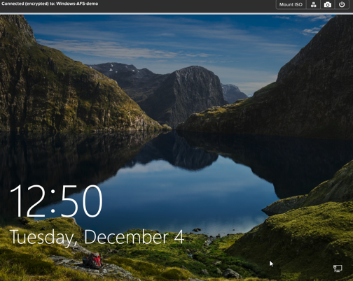
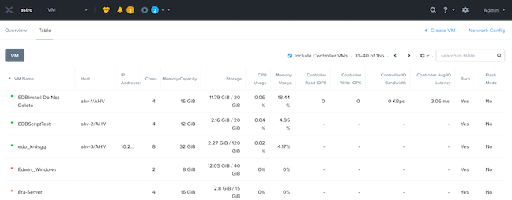
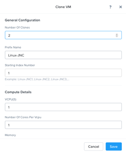
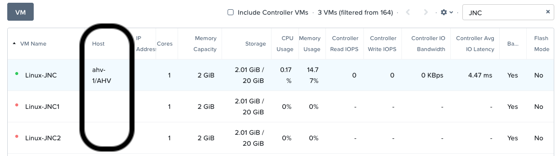

Workload Management¶
ถึงขั้นตอนนี้ เราได้สร้าง VM ขึ้นมาแล้ว 2 VMs สามารถทดสอบฟังก์ชัน VM management ต่างๆ ภายใน AHV นี้ได้ตามนี้.
Note
ภายใน Labs นี้ จะมีการยกตัวอย่างด้วย XYZ หรือ Initial อยู่บ่อยครั้ง ดังนั้นให้ผู้เรียนสังเกตุ และเปลี่ยนตัวอย่างดังกล่าวให้เป็นชื่อของผู้เรียนเอง หรือเป็น User#No. ที่ได้รับมอบหมาย
Power Actions and Console Access¶
เราสามารถสั่ง Power on/off VM ได้และเข้าหน้า console ได้ตามล่างนี้.
ใน Prism Element > VM > Table, แล้วให้ใส่ชื่อ VM ของเราในช่องค้นหาด้านขวาเป็น Linux VM ที่เราได้สร้างไว้ก่อนหน้านี้ เพื่อจะได้กรองเฉพาะชื่อ VM ที่เราต้องการเท่านั้น เช่น Initials-Linux_VM.
Note
Note ในหน้าที่แสดง VM > table นี้ จะมีไฟแสดงสถานะการปิด/เปิดเครื่อง VM อยู่ใน column แรก โดยถ้าเป็นจุดสีแดง แสดงว่า VM นั้นอยู่ในสถานะปิดเครื่องอยู่.
ให้เลือก VM ที่ต้องการ แล้วกด Power On เพื่อเปิด VM .
เลือก VM นั้นอีกที แล้วกด Launch Console.
ในหน้า console ของ Window จะมีให้ใช้งานได้ 4 ฟังก์ชัน คือ: Mount ISO, CTRL-ALT-DEL, Take Screen Capture, and Power.
Note
ในกรณีที่ใช้ ESX:
เราสามารถดำเนินการตาม Lab ด้านบนได้จากหน้า Prism เพียงแค่ทำการรีจิสเตอร์ VMware vCenter เข้ากับ Prism.

Cloning VMs¶
ใน Prism Element > VM > Table, เลือก Initials-Linux_VM ที่สร้างไว้.
คลิก Clone จาก Actions list ด้านล่าง.
กำหนดค่าต่างๆ ดังนี้ แล้วคลิก**Save**.
ค่าต่างๆ ที่ไม่ได้ระบุ ให้ใช้ค่า default values.
Number of Clones - 2
Prefix Name - Initials-Linux-Clone
Starting Index Number - 1
ปล่อยให้ VM ที่ถูก clone ขึ้นมาเป็นสถานะ Powered Off.
ในส่วนการทำ Snapshot และ Clone ของ Nutanix นั้น ใช้อัลกอริทึมในการทำงานแบบ redirect-on-write ซึ่งจะเป็นการเก็บ metadata ของตัวข้อมูลในแต่ละ VM โดย metadata นี้จะเก็บตำแหน่งของข้อมูลที่ถูกเก็บลงบน disk ว่าอยู่ตำแหน่งไหนบ้างเท่านั้น โดยไม่ได้มีการคัดลอกข้อมูลนั้นๆ ขึ้นมาอีกชุดแต่อย่างใด เพื่อทำให้การทำงานของ snapshot และ clone ทำได้อย่างรวดเร็ว และมีประสิทธิภาพที่ดี แม้ว่าจะมีการสั่ง ทำการ snapshot หรือ clone ขึ้นมาหลายๆ VM version ก็ตาม.
Migrating a VM Between Hosts¶
การย้าย VM ข้าม Host ภายใน Cluster เดียวกันแบบออนไลน์ โดยไม่ส่งผลกระทบกับระบบที่มีการใช้งานอยู่ในขณะนั้น เรียกว่า VM live migration ซึ่งถือว่าเป็นฟังก์ชันการทำงานที่มีความสำคัญอย่างยิ่งสำหรับระบบ Virtualization นี้ เพื่อที่เราสามารถทำเรื่องการซ่อมบำรุงระบบ Infrastructure หรือกระจายการทำงานของ workload ให้สามารถทำงานได้อย่างมี performance ที่ดีที่สุดได้.
ใน Prism Element > VM > Table, เลือก Initials-Linux_VM ที่สร้างไว้.
สังเกตุที่คอลัมน์ Host จะเห็นว่า VM ที่อยู่ในสถานะปิดอยู่ (power off) จะไม่มีข้อความใดๆ แสดงขึ้นมาเลย.
เลือก VM ที่ Powered On อยู่, แล้วคลิก Migrate จาก Action List ด้านล่าง.
ในการย้าย VM นั้น เราสามารถที่จะเลือก host ปลายทางที่อยู่ใน Cluster นั้น ที่เราต้องการจะย้าย VM ไปทำงานอยู่บน host นั้นๆ ได้ หรือ สามารถกำหนด default ที่จะให้ระบบของ AHV เลือก host ปลายทางเองโดยอัตโนมัติ.
คลิก Migrate เพื่อย้าย VM ไปยัง Host ที่เลือกไว้.
เมื่อเสร็จสิ้นกระบวนการย้าย VM แล้ว ให้เราตรวจสอบว่า VM นั้นได้มีการเปลี่ยน host location จากบน host เดิม ไปยัง host ใหม่ที่เราเลือกไว้เรียบร้อยแล้ว ตามรูปด้านล่างนี้.

Note
เราสามารถตรวจสอบ progress ของการ migrate ได้ด้วยการไปยังแท็ป ALL VM Tasks ที่อยู่ด้านล่าง.
Configuring Affinity Policies¶
ใน Prism Element > VM > Table, เลือก Initials-Linux_VM ที่สร้างไว้.
เลือก Powered Off VM, แล้วคลิก Update เลื่อนลงด้านล่างแล้วคลิก + Set Affinity.
ให้เลือก 2 Host ที่ต้องการกำหนดให้ VM สามารถทำงานได้เฉพาะ 2 Host นั้นๆ ซึ่งเป็นการกำหนด affinity rule ให้กับ VM นั้น แล้วจากนั้น กด Save และ Save อีกครั้งเพื่อเสร็จสิ้นขั้นตอน.
Note
เราควรเลือกไว้มากกว่า 1 host เพื่อที่จะได้มี host อื่นๆ ที่สามารถรองรับการ migrate VM ได้ ในกรณีที่เกิดเหตุการณ์มี Node เสียหาย.
Power on VM และทำการตรวจสอบว่า VM นั้นได้ทำงานอยู่บน Hosts ที่เราได้กำหนดตามนโยบายของ Affinity rule.
เลือก VM แล้วกด Migrate จาก Action List ด้านล่าง.
เราจะได้รับข้อความตามล่างนี้:
-
This VM has host affinity with 2 out of the 4 available hosts. It can only be migrated to those hosts.
(VM นี้ ได้ถูกกำหนด affinity rule ไว้บน 2 hosts จาก 4 hosts ซึ่งมันจะสามารถถูกย้ายได้เฉพาะบน 2 hosts ที่กำหนดเท่านั้น)
-
จากนั้น ให้กด Migrate.
เราจะเห็นว่า VM ถูกย้ายไปอยู่บนอีก host ตามที่เราเลือกไว้ก่อนหน้านี้.
โดยทั่วไปแล้ว VM-to-Host affinity rules นี้ ถูกนำมาใช้ในการกำหนด VM ต่างๆ ให้ไปทำงานอยู่บน hosts ที่ถูกกำหนดไว้ เพื่อเหตุผลในการจัดการทางด้าน performance หรือเรื่อง license ของซอฟท์แวร์ และนอกจากนั้น AHV ยังสามารถสร้าง VM-to-VM anti-affinity rules ได้เช่นเดียวกัน ซึ่งจะใช้สำหรับแอพพลิเคชันที่มีการทำ high available ที่เราจะต้องแน่ใจว่า หลายๆ instance หรือ VM ของแอพพลิเคชันนั้นๆ ที่ใช้งานเป็น HA cluster กันโดยจะไม่ทำงานอยู่บน Host เดียวกัน ซึ่งอาจจะทำให้ instance/vm นั้นเสียขึ้นมาทั้งคู่ได้ ในกรณีที่ถ้า Host นั้นๆ เสียหาย.
High Availability & Dynamic Scheduling¶
ต่างจาก ESXi โดยสำหรับ AHV นั้น การทำ HA high availability จะถูกเปิดใช้งานโดย default และจะทำการ restart VM บน Node ที่เสียให้ไปทำงานอยู่บน Node อื่นๆ ที่เหมาะสมใน cluster โดยอัตโนมัติ นอกจากนั้น เรายังสามารถทำการจอง resource ในการทำ HA ไว้ได้เลย เพื่อให้มั่นใจว่าจะมี resource เหลือในกระบวนการทำ HA อย่างแน่นอน.
Note
To enable memory reservation, select Enable HA Reservation under > Manage VM High Availability.
As memory is already limited on the shared cluster resources, please do NOT enable HA memory reservations.
ด้วย Acropolis Dynamic Scheduler service, service นั้น AHV สามารถทำงานได้อย่างชาญฉลาดในการมอนิเตอร์การใช้งาน resource ของระบบ เพื่อที่จะสามารถทำการย้าย VM ต่างๆ ที่อยู่บน host ที่มี workload ที่มีการใช้งานเกินกำหนดของระบบแล้ว ไปยัง host อื่นๆ ภายใน cluster ได้โดยอัตโนมัติ เพื่อที่จะทำให้แต่ละ host มีการทำงานด้วย workload performance ที่เหมาะสมกันทั้ง cluster โดยฟังก์ชันนี้จะถูกเปิดใช้งานอยู่แล้ว โดยไม่ต้องทำการปรับ configuration เพิ่มเติมแต่อย่างใด.
ประโยชน์ของ Nutanix AHV solution นั้น นอกจากจะสามารถตัดสินใจในการย้าย VM ไปยัง host อื่นๆ จากการใช้งานของ CPU/memory ที่สูง แล้วยังสามารถตัดสินจากตัว storage performance อีกด้วย .
สามารถเรียนรู้เพิ่มเติมเรื่อง Acropolis Dynamic Scheduler ได้ที่นี่.
Prism Search¶
เราสามารถค้นหาสิ่งต่างๆ ได้อย่างง่ายดายโดยใช้ Prism Central. ลองค้นหาด้วยตัวอย่างด้านลางใน Prism Central Search.
Suggestions:
vm cpu > 1
vm mem > 2
vm iops
create vm
powered on
powered on cpu = 8
ใน Prism Central > .
ตรวจสอบผลที่ได้: Entity, Alerts, and Help.
คลิกที่เครื่องหมาย ด้านหลังคำค้นหาเพื่อเก็บไว้ใช้ในครั้งถัดไป.
Note
เราสามารถใช้ hot key (a slash mark, or /) เมื่อต้องการ search ใน Prism Element และ Prism Central UI เพื่อความรวดเร็ว.